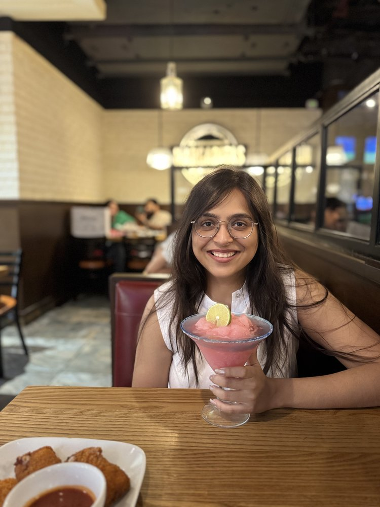

I'm Aditi. I do organic growth marketing. SEO, GEO, AEO, social, brand, content. Five years across B2C and B2B tech startups, all focused on one thing: bringing users in without paid spend. Also a traveler, reader, and writer. Currently in Delhi. Open to relocate.

Best way to reach me: Twitter or LinkedIn. I write on Substack, ship things on the projects page, and occasionally travel somewhere remote.